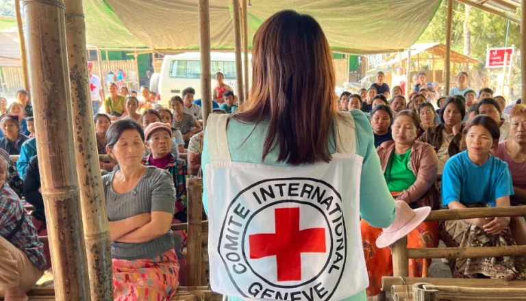
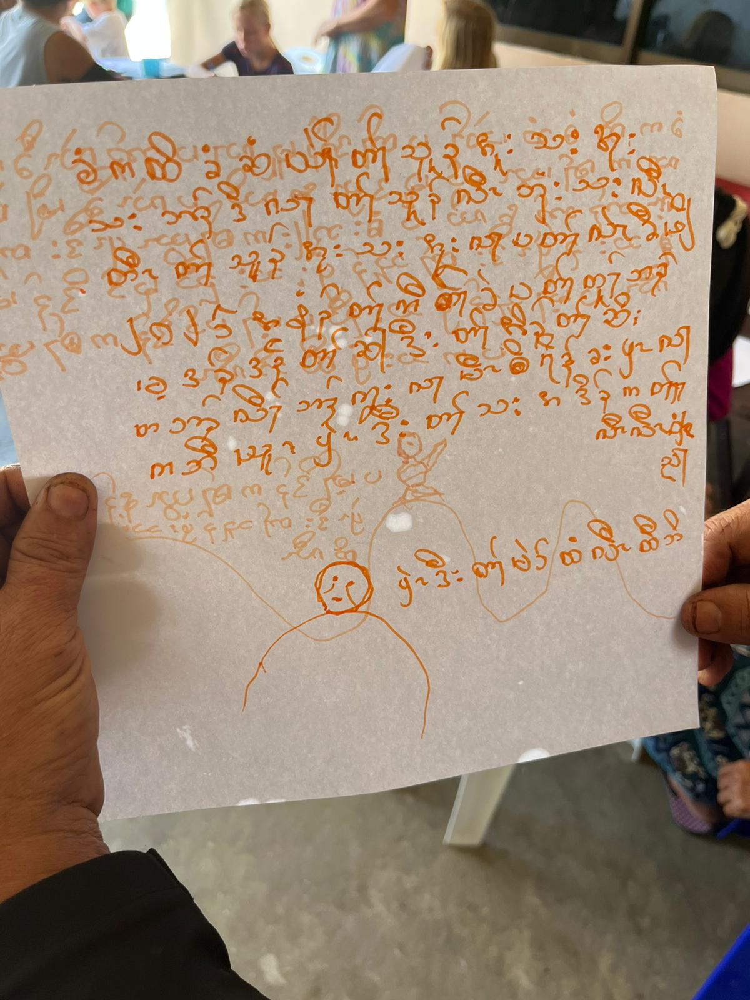

Archive
The archive gathers letters, testimonies, and media artifacts documenting life during conflict and displacement in Myanmar.
Audio
Joy and Pain Interview
Audio interview reflecting on suffering, endurance, and lived experience during conflict.
Kabar Ma Kyay Bu Song
Song artifact preserving emotion, memory, and collective expression through music.
Images

Demining Training
Training image documenting humanitarian mine action and field preparation.

Trauma Response Training
Image showing emergency care instruction and preparation in conflict conditions.

Humanitarian Training
Training artifact illustrating organized care, logistics, and readiness.

Mines Glovebox Photo
Photographic artifact connected to mine awareness and the material reality of danger.
Handwritten Letters

Handwritten Letter Artifact 1
Scanned handwritten testimony preserved as a fragile personal record.

Kids Handwritten Letter 1
[Placeholder] Letter written by a child.

Kids Handwritten Letter 2
[Placeholder] Letter written by a child.
Maps & Infographics

Displacement Map
Map visualizing displacement patterns and the geographic scale of crisis.

Burmese Infographic
Infographic presenting conflict-related information for Burmese-speaking audiences.

Mine Infographic (English)
English-language infographic communicating mine awareness and safety information.